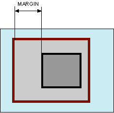

СSS справочник:
Margin и Padding
Margin - устанавливает величину отступа от каждого края элемента. Отступом является пространство от границы текущего элемента до внутренней границы его родительского элемента (рис. 1). Если у элемента нет родителя, отступом будет расстояние от края элемента до края окна браузера с учетом того, что у самого окна по умолчанию тоже установлены отступы. Чтобы от них избавиться, следует устанавливать значение margin для селектора
равное нулю. Разрешается использовать одно, два, три или четыре значения, разделяя их между собой пробелом. Padding - устанавливает значение полей вокруг содержимого элемента. Полем называется расстояние от внутреннего края рамки элемента до воображаемого прямоугольника, ограничивающего его содержимое (рис. 1). Свойство padding позволяет задать величину поля сразу для всех сторон элемента или определить ее только для указанных сторон. Так же разрешается использовать одно, два, три или четыре значения, разделяя их между собой пробелом.

Источник: http://htmlbook.ru/